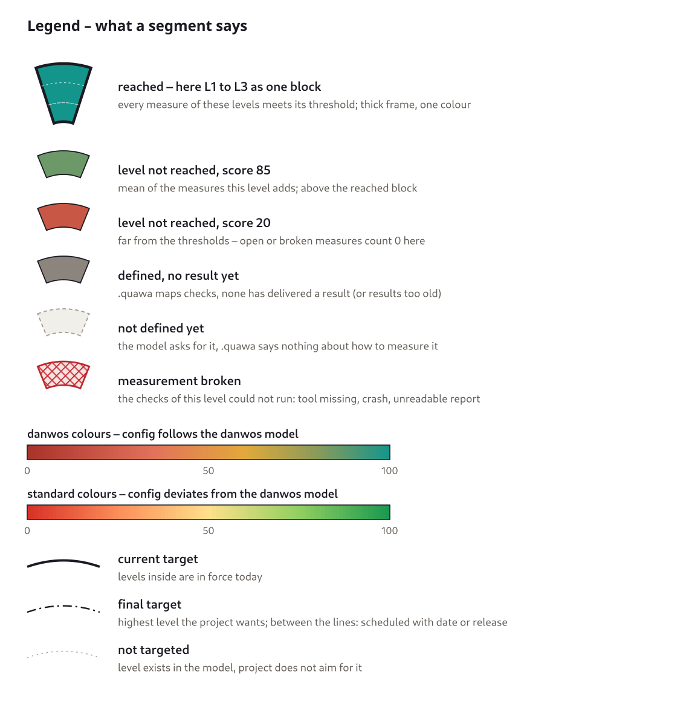
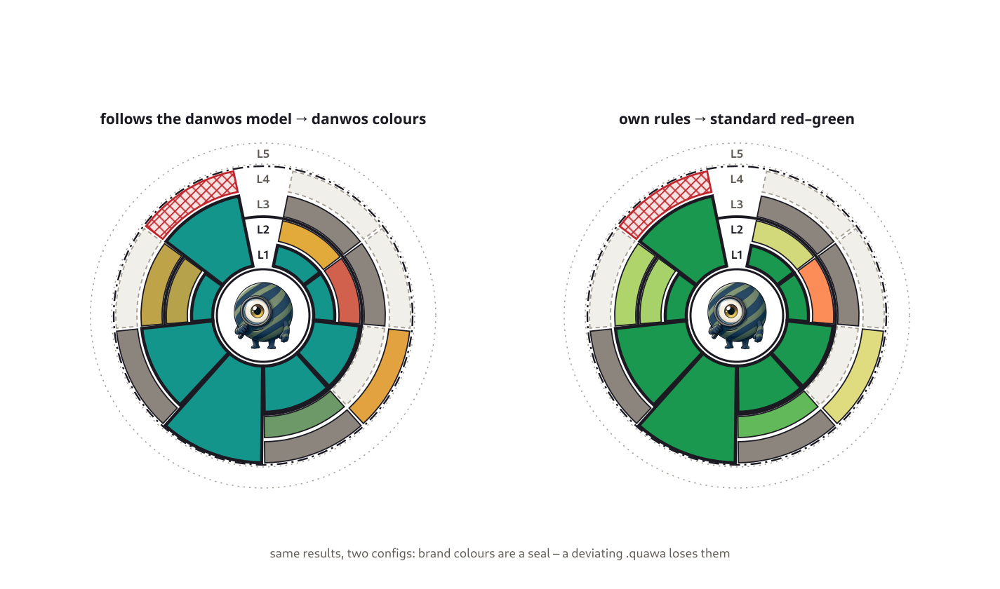
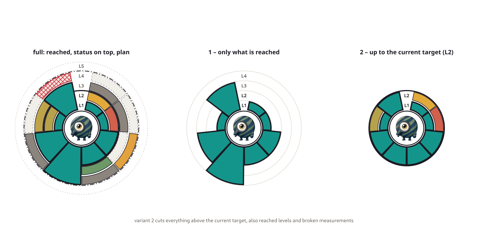

The rings¶
Front view¶

Example with invented values: quawa measured with the danwos model.¶
Centre: the tool’s monster or logo.
Rings: level 1 right around the logo, every further level one ring further out, up to level 5. Level 0 has no ring.
Segments: one per area, at the same angle on every ring.
Reached block: the reached levels of an area merge into one piece of pie from the logo outwards, thick frame, full “good” colour (Reached levels of an area m... (DEC_REACHED_BLOCK)). Its height is the area’s maturity – the picture gets hills and valleys.
On top: every level above the block shows its own state: score colour, dark grey, dashed or hatched (Grey states: not defined = ... (DEC_GREY_STATES)).
Lines: bold circle = current target; dash-dot = final target; dotted ring = level not targeted. Rings between the two lines are scheduled – measured and shown already, in force from their date or release.
One picture answers three questions: where the project stands, where it wants to go, and what has already been thought about.
Legend¶

Colours as a seal¶

danwos scale – the configuration follows the danwos model: deep terracotta
#A8322A→ terracotta#E2725B→ amber#E2A93B→ moss#8A9A5B→ logo teal#14958B.standard scale – the configuration deviates: red
#D73027→ yellow#FEE08B→ green#1A9850.The whole picture switches, not single rings (A configuration that follow... (DEC_COLOUR_SEAL)). When a configuration keeps the danwos colours: see Configuration.
Neither scale is checked for colour blindness yet; the score in the tooltip, the thick frame and the patterns carry the meaning too.
Slim variants¶

Variant |
Shows |
Hides |
For |
|---|---|---|---|
full |
everything |
– |
the complete picture |
reached |
only the reached blocks, thin guide circles, level labels |
everything not reached, target lines |
“where do we stand” at a glance |
target |
everything up to the current target |
everything above it – also reached levels and broken measurements (Slim variant "target" hides... (DEC_TARGET_VARIANT)) |
“what do we owe today” |
3D view (idea)¶
A 3D view of the rings – measures behind every segment, levels to pull apart – is only an idea, not planned for quawa. A pure concept of how it could look, with made-up data: How mature is a tool? on danwos.dev.